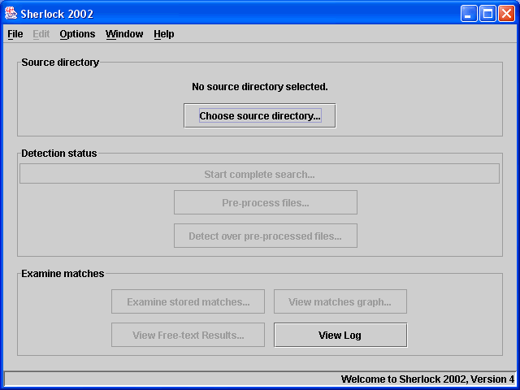

Sherlock is a plagiarism detection tool for academic submissions, both natural language (such as essays, reports and dissertations) as well as source-code (such as programming assignments on Computer Science, Maths or Physics courses).
A new feature in this version of Sherlock allows for more powerful plagiarism detection when using files with some natural language content. These new capabilities can be used for source code, to detect plagiarism in the commenting, but it is most useful in allowing you to detect plagiarism among essay or report assignments.
The algorithm works by breaking documents into sentences. Sentences in different documents are compared to one another and a score is assigned based on how many words a pair of sentences has in common. This gives a good guide for a human assessor as to which documents are most likely to be plagiarised from one another.
Evidence can be output in an HTML (or web page) format, but it is best to use the program itself to decide before outputting evidence.
